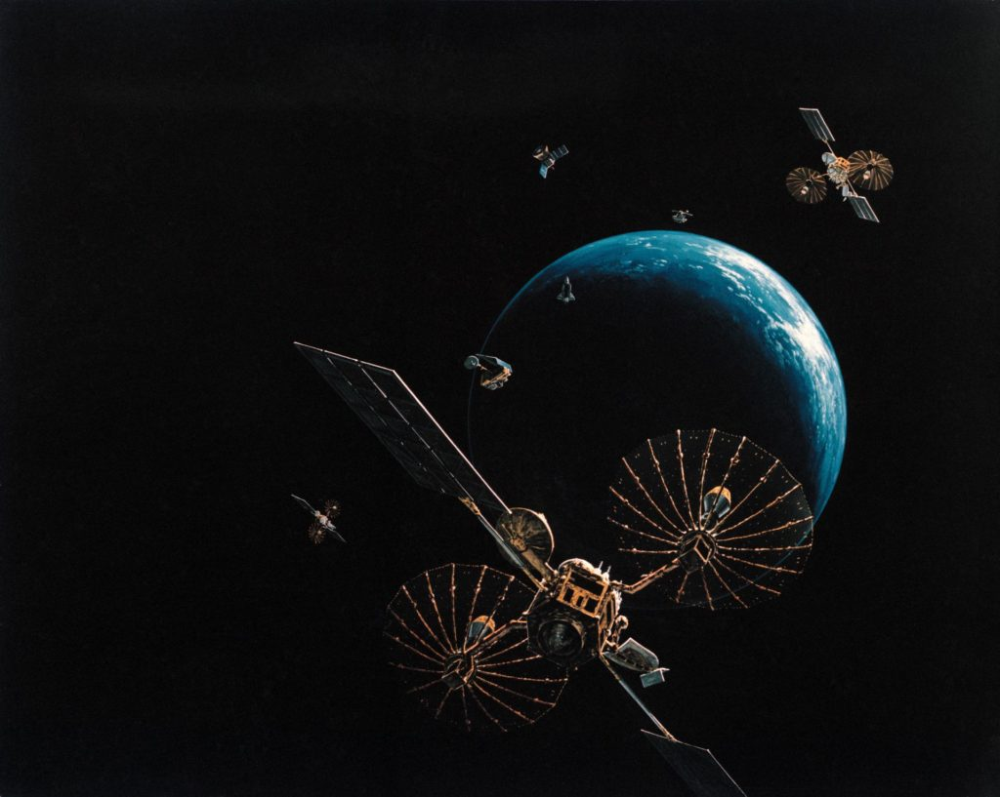

Satellites
A satellite is an object that orbits around a star or a planet. As an example, the moon is a satellite that orbits around the earth. However, when we speak about satellites we often mean satellites of a mechanical nature. Humans have launched more than 6,500 satellites into space! Half of these satellites are inactive, but the rest responsible for providing several services used in our day-to-day lives.
Communication satellites are the most common type of artificial satellite. They provide services for television, telephone service, radio, internet, and also military applications. There are currently 2,224 communication satellites orbiting Earth connecting the world together.
The worlds entire GPS(Global Positioning System) system is created by 27 satellites. They are responsible for tracing your location while using services such as Google Maps. Without them, we would all be stuck using plain old paper maps while on the road.